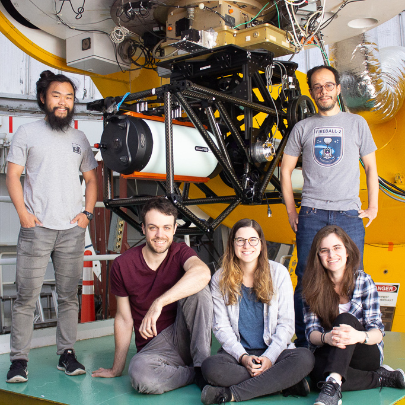
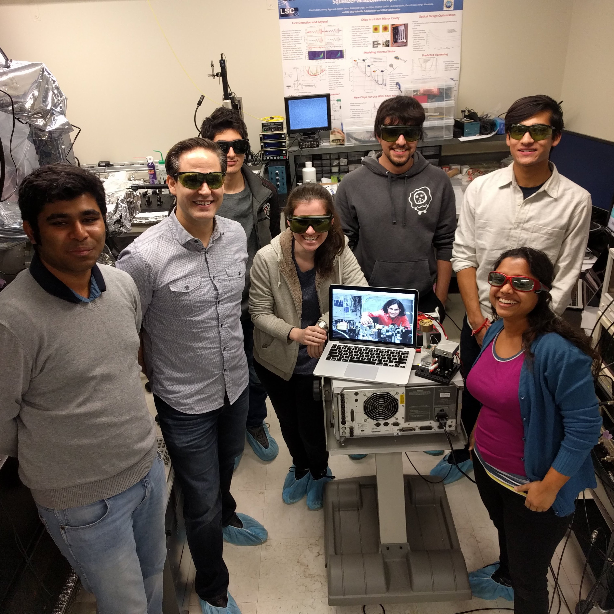
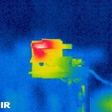
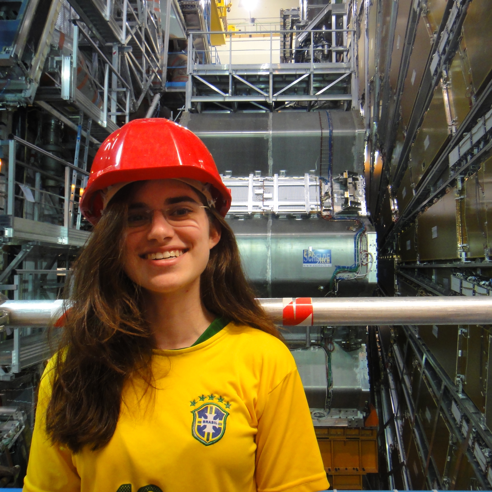

ASTRONOMICAL INSTRUMENTATION AT COLUMBIA
I worked on astronomical instrumentation projects in Professor David Schiminovich's lab. The lab focuses on instruments that can probe for features of the circumgalactic medium (CGM). My thesis work involved the Circumgalactic H-Alpha Spectrograph (CHaS) and the Faint Intergalactic-medium Redshifted Emission Balloon (FIREBall). CHaS is a ground-based IFU spectrograph based at the MDM observatory in Arizona, and I have mostly worked on its electronic components, observation and target data analysis. FIREBall is a balloon-based multi-object UV spectrograph, and I have been awarded NASA's FINESST grant to explore new detectors that will potentially use hexagonal Boron Nitride (hBN), a wide-bandgap material that could have better quantum efficiency than FIREBall's current detectors.SEE CHAS POSTER CHAS INSTRUMENT PAPER

LIGO AT MIT
I worked for a year as post-baccalaureate researcher in Professor Nergis Mavalvala's group at the MIT-LIGO lab. Our experiment aimed at generating squeezed states of light using radiation pressure on a micromechanical mirror to correlate phase and amplitude uncertainties. This is necessary because LIGO's sensitivity is limited by quantum noise. To observe quantum radiation pressure, reducing all classical noises in the experiment is crucial. I worked on the design of an intensity stabilization servo (ISS) that can measure the laser classical intensity fluctuations to the necessary precision and then use feedback to control them. I was also fortunate to be at MIT-LIGO when they received the Nobel Prize and detected their first binary neutron star merger in 2017!SEE LIGO POSTER

ATOMIC, MOLECULAR AND OPTICAL PHYSICS AT YALE
I spent two years and wrote my senior thesis in Professor David DeMille's AMO lab at Yale. His lab uses the polarizability of diatomic molecules to perform precision measurements. From the three projects I worked on in his lab, my favorite one was upgrading a 3D printed laser shutter prototype originally developed by Grace Zhang at MIT. I modified the shutter blade using 3D modeling and redesigned its driving circuit to block light faster than the original prototype. The original shutter supported much lower laser powers than what we used in the lab, so I upgraded the model to support 14 times more power than previously, enabling the implementation of a few shutters in our laser cooling experiment. The other projects included building an external cavity diode laser and implementing a laser locking system.SEE SHUTTER POSTER

PARTICLE PHYSICS AT CERN
I spent my first summer in college with Yale Professor Sarah Demers’ particle physics group at CERN working in the ATLAS experiment. I wrote ROOT programs in C++ and Python in order to extract information from different sets of Monte Carlo simulations, so we could compare diboson background to the decay of the Higgs boson to W and Z bosons. I inspected the behavior of kinematic variables from decay products of diboson jets and examined the cross sections expected from these decay modes. My time at CERN was sponsored by the Alan S. Tetelman Fellowship for International Research in the Sciences.READ ABOUT IT